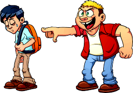

Il cyber bullismo è la manifestazione in Rete di un fenomeno più ampio e meglio conosciuto come bullismo. Quest'ultimo è caratterizzato da azioni violente e intimidatorie esercitate da un bullo, o un gruppo di bulli, su una vittima. Le azioni possono riguardare molestie verbali, aggressioni fisiche, persecuzioni, generalmente attuate in ambiente scolastico. Oggi la tecnologia consente ai bulli di infiltrarsi nelle case delle vittime, di materializzarsi in ogni momento della loro vita, perseguitandole con messaggi, immagini, video offensivi inviati tramite smartphone o pubblicati sui siti web tramite Internet. Il bullismo diventa quindi cyberbullismo. Il cyberbullismo definisce un insieme di azioni aggressive e intenzionali, di una singola persona o di un gruppo, realizzate mediante strumenti elettronici (sms, mms, foto, video, email, chatt rooms, istant messaging, siti web, telefonate), il cui obiettivo e quello di provocare danni ad un coetaneo incapace di difendersi.